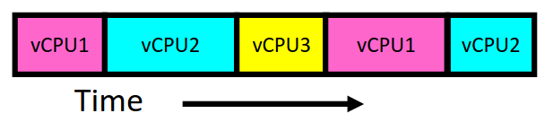
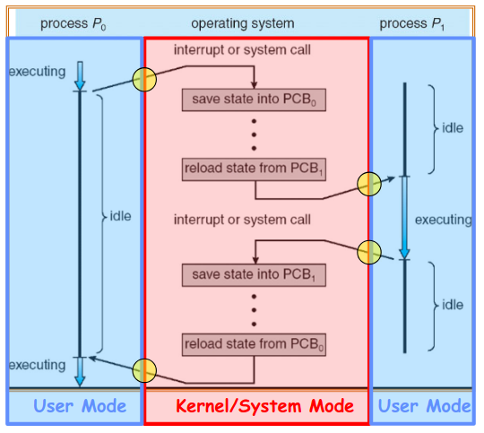

Operating System Abstractions
Table of Contents
The operating system abstracts underlying hardware to help tame complexity. The bottom line of an operating system is to provide the ability to run programs.
1. Threads
A thread is a single unique execution context, which contains things like the program counter, registers, execution flags, stack, and its memory state.
A thread is executing on a processor (core) when it is resident in the processor registers. Resident means that the registers of the processor are currently holding the state for that thread.
A thread is said to be suspended (not executing) when its state is not resident in the processor. This happens when the processor is executing some other thread, and the previous state for the suspended thread is usually stored somewhere in memory.
Threads are used to create the illusion that there are more cores than there are processors: threads are virtual cores. To do this, threads multiplex between different “vCPUs” in real time:

When the thread is not running, the contents of their registers are stored in a Thread Control Block (TCB), which is a data structure in the kernel.
We can use the pthreads interface to create and manage threads. Specifically, we can use pthread_create(), pthread_exit(), and pthread_join().
1.1. Simultaneous Mulithreading
Simultaneous multithreading (also called hyperthreading by Intel) is a hardware scheduling technique that allows multiple threads to run on the same processor core. Since execution of a program often requires stalls due to hazards, we can make use of the free hardware to run computation on other threads.
2. Address Spaces
An address space is the set of accessible addresses and the state associated with them. Address spaces may be virtual, in which case it is distinct from the memory space of the actual physical machine.
Threads have to share non-CPU resources such as memory and I/O devices, which means that each thread can possibly read/write memory of other processes or even the OS. This is a problem, which means our OS must implement some kind of protection on what memory programs can access.
2.1. Base and Bound
We can define a block of memory a program can use using a base address and a bound offset/size. The virtual address space of the program starts at zero, so our OS translates on-the-fly these addresses by adding them to our base address. Protection is done by ensuring that our addresses never exceed the bound.
Base and bound has several problems, however. Base and bound is wasteful, as it must dedicate physical memory for future use. Additionally, we must also solve the fragmentation problem, as the kernel must somehow fit whole processes into contiguous blocks of memory.
2.2. Paged Virtual Address Space
We can also break the entire virtual address space for our program into equal sized chunks (i.e. pages), with each page having its own base. The processor translates each virtual address according to the bases stored in a page table.
3. Processes
A process is an execution environment with restricted rights, which consists of a (protected) address space along with one or more threads. Application programs executes as processes.
Processes are protected by the OS from each other. This is done by creating protected address spaces for each process, such as using translation techniques like those described earlier. However, there is a tradeoff, as communication becomes harder between processes.
3.1. Process Control Blocks
The kernel represents each process using a process control block (PCB). This includes information on status (running, ready, blocked), space for register state, the process ID, execution time, etc.
The kernel scheduler then maintains a data structure containing these PCBs. It is then up to the scheduler to make policy decisions regarding the allocation of processors to each process:

4. Dual Mode Operation
The hardware provides at least two modes of operation: the kernel mode (or “supervisor” mode) and the user mode. Certain operations will be prohibited when running in user mode, such as changing the page table pointer, diabling interrupts, etc.
Additionally, we need carefully controlled transitions between user mode and kernel mode. There are three ways user mode can transfer into kernel mode, with the primary one being the system call interface: this is the primary way the user mode interacts with the kernel mode. The two other methods are interrupts and traps (or exceptions).